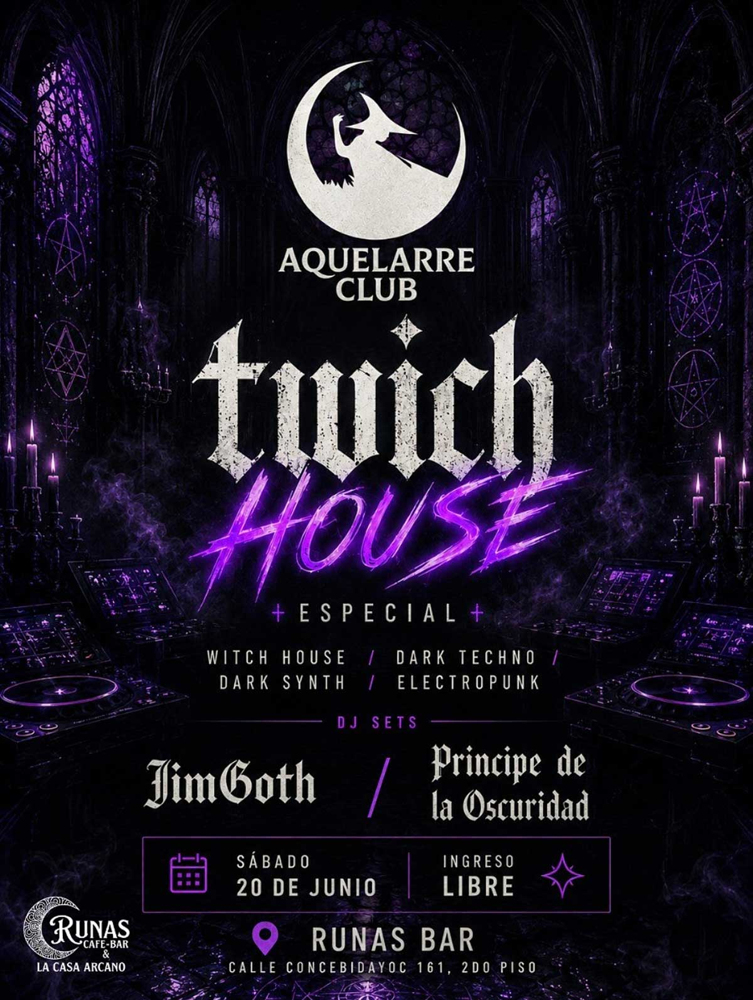

TWICH HOUSE
fecha: 20/06/26 hora: 9pm
lugar: Runas Bar
Calle Concebidayoc 161 (2do piso), Cusco


🕸️ WITCH HOUSE – ESPECIAL AQUELARRE CLUB 🖤
Este sábado 20 de junio, Aquelarre Club abre nuevamente las puertas del ritual para una noche dedicada al lado más oscuro de la electrónica contemporánea.
Una sesión especial consagrada al Witch House, Dark Techno, Dark Synth y Electropunk; géneros donde convergen las atmósferas espectrales, los beats industriales, las voces distorsionadas y las sombras digitales.
⚡ UNA NOCHE DE GLITCH Y OSCURIDAD
Sumérgete en un viaje sonoro inspirado por proyectos como:
Crystal Castles • Salem • White Ring • oOoOO • CRIM3S • IC3PEAK • Ritualz • Sidewalks and Skeletons • Balam Acab • TR/ST • Boy Harsher • Pastel Ghost • Lebanon Hanover • She Past Away • Drab Majesty y más.
⚡ Además:
Dark Techno • Dark Synth • Electropunk • Industrial • EBM • Darkwave Electrónico
🎧 DJS DEL AQUELARRE
🕸️ JimGoth
⚰️ Príncipe de la Oscuridad
🦇 DRESS CODE SUGERIDO
Negro • Witchy • Cyber Goth • Dark Rave • Glitch • Occult • Ritual
📍 UBICACIÓN DEL RITUAL
Runas Bar
Calle Concebidayoc 161 – 2do piso
Cusco
🕘 Desde las 9:00 p.m.
🎟️ INGRESO LIBRE
🔥 Una noche donde los sintetizadores invocan sombras, los beats se convierten en ritual y la pista de baile se transforma en un círculo mágico.
🕸️ Aquelarre Club – Cusco
La oscuridad también baila.
#twichhouse #darksynth #electropunk #darktechno #cusco #goth
LINE-UP:
Jim Goth
Príncipe de la Oscuridad